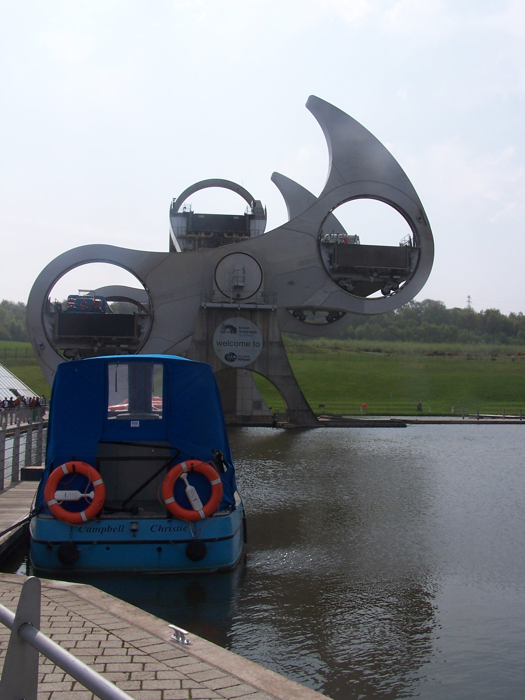

West Highland Way and South Scotland
Monday 20th April Fort William to Kinlochleven
West Highland Way on forest tracks and hill paths
14 miles approx
It was already warm and fairly
sunny as I started through Fort William in the morning. I was
starting the second stage of
the walk which gave me both a high and a low feeling. The low because I was
now on day one again and am leaving the familiar surroundings of Fort
William, the high because I now am starting the
second chunk of the
walk and am already over 250 miles into the 700+ miles to home. I sent
the North of
Scotland maps back home from the post office in town before heading off
to the roundabout where the West Highland Way officially starts and
ends at the small road into Glen Nevis. After a mile or so of roadside
footpath the way heads on tracks into the forest on the opposite
side to
the Ben ascent.
Intially
the forest track has been recently re-made
using a bulldozer and is more for forest vehicles than for walkers.
It’s a real monster of a track. After a couple of winding miles, I
left the track to walk up to Dun
Deardail on a made footparth. This is a bronze age fort on perched on
top of a small peak with great views down
into the glen and over to Ben Nevis. Standing on its embankment it
seemed that it would have been a perfect place to live, but when you
consider the weather in winter and the fact that the people who lived
here must have had to fight to defend it, I guess it wasn't ideal. To
visit the fort is a bit of a detour and has to be
backtracked afterwards too. It is most worthwhile for the views and the
sense of history. The way then drops off the
monster track down into the trees on a footpath. The trees helped to
cool things down a bit. The day was very warm with no wind and the sun
begining to break through the milky sky. Large areas of the
marked-on-the-map forest had been felled. This helped give to great views back
of the Ben.
Apart
from the climb up at the start, todays walk
wasn't too hard with only a few ups and downs. I met quite a few people
walking north. They were on
their last day of the West Highland Way. After not meeting anyone
for several days on
the North section of the walk, and seeing over 15 people today,
this seemed to be a busy path. After following a track through the
glen for several hours, I dropped down to Kinlochleven and
found the Blackwater campsite
near the old aluminium site. It cost the just £6 and is not a bad site.
There are shared showers, a drying
room (I left my clothes in here over night with the heater on, worked a
treat), and only it is only 200 meters from the shops. I walked into
town to find the chippy shut
on Mondays. Hmmm. I was looking forward to a chippy. I had to make
do with cold pies frm the COOP. I was
expecting a long day tomorrow and the forecast was for bad weather
too. I got my head down early and was woken with the
rain as it arrived in the night and then again just as my alarm sounded
in
the morning.
Tuesday 21st April Kinlochleven to Tyndrum
Following West Highland Way on hill paths and tracks
26 miles approx
I was up
and away by 6:15am and walking back into town following WHW signs out
through a small housing estate on the other side of the river. The path then
turns back round the back of the campsite.
I crossed a bridge and met a guy who was walking his dog in town. He
had walked through the campsite. Hmmm I could have saved 20
minutes and just left the campsite the other way. A
forest track
follows the water pipes up the hill for a time. There are about five
parallel pipes bringing water from the reservoir down to the aluminium
works. The track weaves steeply up the hillside to a building next to
the pipes at the top. This is set up for moutain biking too with
barriers and signs. There was noone here this morning. At the
top, there is a badly maintained sign directing you along a
path that leaves on a hill path over heather
and
rock towards the Devils Staircase. At this point the clouds were
building up and I could see rain in
the near distance. There was still some climbing to do up to the ridge
at the top of the Devils Staircase but the walking was fairly easy
going until the rain came in and came in hard.
As I crested the ridge looking down the staircase, Stob Dearg and Glen
Coe were still a sight in the heavy cloud, wind and
rain. It pleased me that I was somewhere familiar again. I
descended the devils staircase which didn't seem all that bad
really, not
compared to the climb that I had done out of Kinlochlevel on the other
side. The
main A82 road through the glen was busy even in this weather and at
that early hour, with
drivers zooming along in the rain and probably
wondering what I was doing.
Walking now towards the Kings
House Hotel, which sits alone in this great open landscape, I met the first walkers of the day, heading
north. They were surprised that I'd already walked their
days walk and it was
just after 9am. They asked me about the Devils Staircase, as they were
worried that it would be the finishing of them. I reassured them that
it wasn't all that bad. Further on, there were quite a few people
leaving from Kings House,
most of which were camping outside. The hotel itself wasn't open being
so early. I
pressed on through the rain on a track (that is probably the old single
track road) as it crossed the main A road and headed
out towards the ski centre on the other side of the glen. From now I
was on a metalled track, with
slippery wet stones making walking a bit harder still. Reading
one of the plaques this was the route of
General Wade's military road
but was resurfaced by Telford some 100+ years ago. It certainly does
make for
easier walking than clambering through the miles of boggy wild moorland
that it drives through. It was a bit more up and down than I had
expected. For some reason I
kind of thought it would be fairly flat. I don't know why? I crossed
the
Ba Burn on the Ba Bridge. I was almost as wet as the Burn itself.
Graham, a friend from work had told me to look out for this beautiful
place, and that he had suffered sun stroke when he walked the WHW
several years ago. There was no risk of the same happening to me today.
I followed the track for several more miles to where it
became tarmac near Loch Tulla. After crossing the Victoria Bridge,
there followed a steep climb up and then a drop down
through trees to the Bridge of Orchy. At this point there was some
blue sky
showing through. I didn't
stop, wanting to press on to get showered and dry at Tyndrum, some
miles further on. I did have a quick look at the station as it was
featured in the Mountain program with Griff Jones. The track from here
to Tyndrum follows the railway line pretty much as it heads
through the glen. I had a quick stop to dry off in the warm sunshine,
sat on a rock looking at some of the hugh bolders that had been left by
ice flows many thousands of years earlier, and wondered what they had
witnessed in the years since then. All the
cloud was moving away north. I followed the track past some magnificent
mountains, highland cattle and then right along side the railway
line. At
one
point I missed a crossing over the line and ended up in a bog between
the road and railway and had to climb the fence to cross the line -
disregarding the warning signs to rejoin the track on the other side.
The path then dropped into Tyndrum. I stopped in the village store for
some curry
pies then headed to the 'By the Way' campsite which is by the railway
and the West
Highland Way. It was a busy little campsite with lots of way
walkers heading north. I
was surprised to find that most were just aiming for Bridge of Orchy in
the morning. Perhaps I was pushing too hard having walked nearly 30
miles today. I pitched my tent in a corner an got showered before
zedding out. Noisy owls were scrapping and screeching in the trees and woke me a
few times in the
night. It did rain a little too.
Wednesday 22nd April Tyndrum to Beinglass Farm (Invershin)
Mainly tracks and some hill paths on WHW
12 Miles approx.
With
a
shorter day today I decided to have a little lie in. There was quite a
lot of condensation on the flysheet, so I lay there and let it dry
in the morning sun. There was a large party of walkers heading north,
but as they were only heading as far as the Bridge of Orchy
they were having a late start too. I packed up and was on the
way again by 10am. For the first part of the day I was walking by the
river and an area
set out for people to potter about. There are information signs about
the old lead mining
industry and how the land is still poluted where the mining took place
with not much growing even today. A bit further along there is a small
lochan near Dalrigh. This is reputadly where Robert de Bruce threw
his sword whilst fleeing a
battle. This is a bit Arthurian and I gess the story holds as much
interest to a Scotsman as the great King Arthur and Excalibur has to an
Englishman. For the tourist, a stone bench beside the water has a sword
carved into it.
The way then crossed the A82 again at Holy Pool. I took a quick
detour to the pool. It is said that people used to be baptised in the
water where a natural ridge of rock divides it. This allowed men
to go in
on one side and women on the other. On then to the national trust farm
at Auchtertyre. This is a working visitors farm and has camping too. It
actually looks nicer than the site that I stayed at. I stopped for
a bacon
butty and a coffee at the cafe/shop and had a chat with the guy running
it. We discussed the weather and how nice it has been these last few
weeks. I would recommend to anyone reading this that staying here for
camping would be a better choice as the views are open and wonderful.
The facilities here are nicer too. The sun was already really warm
as I
walked on towards St Fillans Church. This is now an old ruin, but is
lovely being covered
in trees and buttercups. The way now goes over the river and through a
little field before it crossed over the road again and climbs through
trees up
above Crainlarich. This was quite a climb too, with some very steep ups
and
downs. The path became quite busy here at times with groups of people
heading North. Some lads walking with huge backpacks. Bigger than any I
have ever seen whilst walking. Out of the trees the path splits, one
way heads down to
Crainlarich the other into Glen Falloch. It was Into the glen for me as
this boad valley leads down to the biggest fresh water lake in
Great
Britain, Loch Lomond.
day today I decided to have a little lie in. There was quite a
lot of condensation on the flysheet, so I lay there and let it dry
in the morning sun. There was a large party of walkers heading north,
but as they were only heading as far as the Bridge of Orchy
they were having a late start too. I packed up and was on the
way again by 10am. For the first part of the day I was walking by the
river and an area
set out for people to potter about. There are information signs about
the old lead mining
industry and how the land is still poluted where the mining took place
with not much growing even today. A bit further along there is a small
lochan near Dalrigh. This is reputadly where Robert de Bruce threw
his sword whilst fleeing a
battle. This is a bit Arthurian and I gess the story holds as much
interest to a Scotsman as the great King Arthur and Excalibur has to an
Englishman. For the tourist, a stone bench beside the water has a sword
carved into it.
The way then crossed the A82 again at Holy Pool. I took a quick
detour to the pool. It is said that people used to be baptised in the
water where a natural ridge of rock divides it. This allowed men
to go in
on one side and women on the other. On then to the national trust farm
at Auchtertyre. This is a working visitors farm and has camping too. It
actually looks nicer than the site that I stayed at. I stopped for
a bacon
butty and a coffee at the cafe/shop and had a chat with the guy running
it. We discussed the weather and how nice it has been these last few
weeks. I would recommend to anyone reading this that staying here for
camping would be a better choice as the views are open and wonderful.
The facilities here are nicer too. The sun was already really warm
as I
walked on towards St Fillans Church. This is now an old ruin, but is
lovely being covered
in trees and buttercups. The way now goes over the river and through a
little field before it crossed over the road again and climbs through
trees up
above Crainlarich. This was quite a climb too, with some very steep ups
and
downs. The path became quite busy here at times with groups of people
heading North. Some lads walking with huge backpacks. Bigger than any I
have ever seen whilst walking. Out of the trees the path splits, one
way heads down to
Crainlarich the other into Glen Falloch. It was Into the glen for me as
this boad valley leads down to the biggest fresh water lake in
Great
Britain, Loch Lomond.
The path had recently been resurfaced as
I headed down through large heard of highland cattle. They were adding
further resurfacing to it in places too. At Carmyle Cottage the way
crossed the road and then goes under the railway line using a 'Sheep
Creep'. This creep (underpass) may be great for sheep, but was far too
low for
people walking with rucksacks on. I managed to scrape through. There
followed a long walk
up and down a broad track from here. At one point it wasn't at all
clear which
way I had to go and I ended up in a messy farm area at Derrydaroch. I
knew it was the wrong way when I found myself stuck in a complex
of rusty sheep pens, and came to a dead sheep lying, stinking, in
one of them. Nice. I backed up to the track
and guessed that I should take the left fork. Its strange but the way
takes you high
above the falls of falloch which looks to have a car park for road
users. A couple of miles more walking and I was at the Beinglass
farm
campsite. This was a nice little place, and caters well for the WHW
walkers. It has a bar which served food, it has good showers with
a turn knob instead
of a push, push, push knob - so it stays on until you turn it off, and
there is plenty of camping space. The laundrette was being used by the
staff
though so I wasn't able to give my gear a good wash.
Just as
I arrived at
3:30pm the cloud had started to build. I had a nice curry and a pint of
Tenants Extra Cold. While I was eating a couple of people walked into
the bar. One guy was cleary Scottish and the other told me he was from
New Zealand. I discovered as we got talking that he too was walking end
to end. He, Ron, was walking south to north and doing it in stages
over a few years. He was following a route from a book and was hoping
to make to the end at John O'groats this time. We talked about our
experiences so far. Ron is 62 (doesn't look it) and has family in
Liverpool. He gave me some pages out of his book, showing an
alternative route tp take in bad weather to join the WHW with the canal
joining Glasgow and Edinburgh. My route was to go over the Campsie
Fells which would need good weather, whilst his went round them on a
disused railway line. It was nice to talk with someone who was looking
to complete this mamoth walk. He had a few tales to tell of his
experiences in the south and most notable the bad weather on the
pennines.
I
headed
for the tent and called home before listening for the weather on the
radio. The forecast was for rain in the night and morning. I woke in
the
night with the rain. It was heavy and loud but the tent held it out.
Its kind of nice to be warm in your little tent with all that weather
just millimeters outside. Its not nice, thinking that I will be walking
in it in a few hours. I was planning a long day tomorrow too.
Thursday 23rd April Beinglass Farm to Gartocharn
Mostly wet lochside paths, with some track and a little road
Approx 27 miles
Today
I was heading to stay at a friends Aunt and Uncles house, just off the
West Highland Way. Ive worked with Roy for nearly 9 years and when I
told him I would be walking on the WHW he said that I should stop at his Uncles place. It was going to be a long day so the alarm was set for 5am. It
was still raining so I made the decision to wait an hour but it was still
raining at 6am. I got up and quickly took down the tent and took
everything to the shower room. I hung the tent up to drip dry
whilst I had a shower. There was lots of room so I was able to pack things
up in here. As I finished the Scottish guy and Ron came in. I said my
goodbuys and was quickly on my way. I put the cape on as the rain was quite
heavy. The walk up to the north shore of Loch Lomond was quite easy
going, if only a bit slippy and muddy in parts. I passed the little
jetty where you can summon the small ferry from Ardlui. By now I was
getting warm in all the waterproofs and the sun was trying to break
though the cloud. After Creag a' Mhadaidh the path got more difficult. With the cape
on I was struggling to clamber over slippy rocks and roots as I
progressed along the tree covered shore. Luckily the rain had gone
off so I was able to lose the cape not too much further on. At some
points the path brought me right up to the waters edge. At Rob Roys cave the
rocks were far too slippy to investigate it properly. I scrambled around some huge
bolders but couldn't find what I would call a cave. I headed back up to the path
and had to climb up some very slippy stone steps above the cave. This was a bit
unnerving. The paths from here
up to Inversnaid Hotel were easier. The hotel didn't look busy with
just a few cars parked up front. I passed accross the car park and took a small footbridge
over the waterfall. I was now back in the trees and the path quickly got back to
its usual form, quite difficult to very difficult going. At one point
there is a bit of a Bad Step, where a bolder has to be crossed with a straight down drop of about 15
foot above the water. There is a very narrow, boot width, ledge cut
into the rock. I was wet, the rock was slippy, the pack was heavy. Hmmm, I could be swimming, but
with a quick dash I was over. Further along there had been some wooden
steps put in to get you over similar obstacles. This made for easier progress but I hope they don't do
this all along as sometimes bits like the bolder dash give you
something to remember about the experience.
This hard walking went on for another
six miles before I came to a car park at Rowardennan. Froim here you
can walk up Ben Lomond. I would have liked to do this but with such a
long day and given that I was staying at Roys Uncles tonight, I pressed on. At the YHA I sat on
the beach
beside the loch and called Roys Aunty just to be sure that they were
expecting me. The sun was out now and really warm too. At Carraig I
followed the road for a while to Anchorage Cottage. At Balmaha the WHW
climbs steeply up to Craigie Fort where you get great views accross the
loch. The village has a shop and an Inn. I bought a few drinks and an
Ice Lolly before pressing on down the road, following the WHW
alternative route for a while to a track just before Milton of
Buchanan. This track is typical of Scotland. There is no footpath signs
but you
are ok to use it due to there freedom to roam laws. Maggy Lapslies Walk
(Track) would then take me to the road into Gartocharn. I crossed some
well
worn stepping stones over the Burn of Mar then continued on the path to
Woodend Lodge. Here an old Iron bridge crosses the river. You can walk
over it but a sign warns that it is an unsafe structure. I survived
the crossing to the lodge for the old Buchanan castle. I
followed the old driveway
to a gatehouse on the roadside. Now followed a mile walk into town
on a
fast and busy A road. More busy with rush hour traffic. I walked
carefully along
the grass verge, where there was one, and was soon in the village. Roys
Uncle, John Crawford, has a house that is set back from the road and
has
great views down the glen to Ben Lomond. A really nice place to live.
His wife Helen runs it as a B&B so I had my own room with shower.
We
talked a bit about my walk and I headed off to the Hungry Monk pub
across the road for dinner. After dinner I called home then sat talking
with John and Helen in the living room, drinking whisky until quite late.
Friday 24th April Gartocharn to Milton of Campsie
Mostly paths on old railway line, with some road
Approx 22 miles
I
woke
several times in the night being too warm and having a lot going
through my
mind about the route I would be taking in the morning and where I was
heading as the days destination. I got up at 6:30 and studied
the maps further. Had a chat with John over breakfast. He has a fairly
strong Glaswegian Scotish accent and I found it difficult to follow him
sometimes. The strangest thing was that he told me that he couldn't
understand me at all. When I went to pay, they refused. How kind
they are.
After buying a few bits from the post office I crossed the road and
took a small side road next to the Hungry Monk pub. I was walking off
my maps now but maps that I had looked at overnight
showed me that this road went to and crossed an old railway line that
at some point becomes a cycle track (route 7) that cut across
to join the West Highland Way under Drymen. That was a lot of off map
walking but I was ready to give it a go rather than walk on the main
road again. Anyway the sun was out, the road was
quiet and I was feeling good. I called Roy and thanked him for the stay
at his Uncles place. He was sat at his desk at work and I was lucky, I
was doing something that was me. It makes me me.
After about three miles on the road I came to a humped bridge that
crossing the old railway line. At this point it was totally overgrown
and incorperated into the local farmers fields. I stayed on the
road passing some strangly shaped hedges and nice properties. I could
see the route of the railway line following along side the road.
Eventually I found a sign
for cycle route 7. I took the track and crossed an aquaduct which
was
basically a walkway over a large pipe where at one time a railway
bridge would have crossed the valley and river below. It was a bit airy
but added some interest to the walking. Shortly after the route joined
the WHW at the
road into Gartness. I met a couple of guys walking north. They asked if
I
was heading south and were impressed when I told them that I was walking
from end to end. They asked how long I had been walking. Wow it
had been three weeks, and I had at least ten to go.
Back on the West Highland Way, but only for a few miles. After
Gartness the way takes an old railway line toward Dumgoyne. There were
a lot of people on this path, all heading North and all with big packs and just starting out on
the way. I came to a couple of gates at Dumgoyach Bridge. This is where
the way heads right but I continued to follow the old railway to the
canal at Kirkintilloch via Milton of Campsie. I was now following hand
drawn sketch maps from Rons book so I had no idea of the distances that I'd be covering. As I
opened the second gate I could see people looking at me and talking to
each other. I'll bet that they thought I was going the wrong way as it
was the opposite way to the WHW. This section of the railway was very muddy to begin with, and it got
worse too where it was obviously being used by horse riders. I looked
over
to Dumgoyne and the Campsie fells, they are very steep, and good
looking hills.
They looked inviting but the clouds were building over them and I had
made the decision to take the low route given rain on the weather
forecast. I guessed that
by staying low I was doing the right thing. I will have to explore
these lonely hills some other day. The path I was on stayed bad until
it emerged at
Strathblane. I asked a local looking guy how far it was to Lennoxtown,
he replied with a cockney accent, that it is about
four miles further on and was very helpful by telling me how to get
through Strathblane and rejoin the path. The path, again on the
old
railway, was now covered in tarmac. This made for quicker walking and I
was soon
in Lennoxtown. This place was typically Scotish in so far as it was
full of grey pebble dash blocks of flats and houses. It looked so out
of place in this remote landscape. I quickly found my way back to the
path with just 1.5miles to Milton of
Campsie and my hotel. I stopped to clean my boots on the old platform
at Milton, then I asked a woman for directions for the hotel. It was
about a mile
out of town, but in the right direction for tomorrow. The Kincade House
hotel is a lovely and posh old country house. However someone
decided to surround it with naff looking housing
estate. Thats Scotland for you. The room was nice. I went to the bar
for dinner and a couple of pints of Tenants. After a
nice bath I watched some TV and looked at my maps and notes. I had a
long day planned for tomorrow and to begin with I was still walking off
my map. I had heard that the canal from Glasgow to Edinburgh was a
horrible walk. Some websites give this impression and Roys Uncle told
me stories of how yobs chuck cans at you whilst you make your way along
it. Not something to look forward to.
Saturday 25th April Milton of Campsie to Linlithgow
Mostly canal towpath and old railway
Approx 28 miles
I
woke early and had a bath before a full breakfast. I was away by
8:30am. T had decided to continue down the road to begin with. Not too far along I found a path that was signed as a route to
Kirkintillloch. Following this path, I soon rejoined the old railway line
which took me into town. Kirkintilloch is a bit of a
dreary looking place. It was early and people were waling or
driving to work. Just over the road I found the Forth and Clyde canal. I decided that this
was now the time to just yomp it out. I would be on this towpath all day with
over 24 miles to go. To my disbelief the canal was really nice. It cut through a very
rural landscape, with the Campsie and Kilsyth hills on the left and
fields and trees on the right. I was averaging a quick 4mph along this towpath,
and found myself passing the few canal boats that I saw.
The towpath got
busier over the day with cyclists, runners, other walkers and the odd guy
fishing. It is really popular in certain places as you near any town along its route. After a few hours I
reached the Falkirk Wheel at 12:30pm. I had made really good time.
This place was really busy, family day out stuff, with a little funfair
and visitor centre. It seemed that you could pay to go on a boat up and
then back down the on the lift bridge. After an ice cream I walked up to the
top of the lift and followed the
now Union Canal towards Falkirk. The sun was out nd really strong now so I
stopped to put cream on. Just two miles further on I was at the Falkirk
tunnel. This can only be described as the highlight of the day, and one
of the best parts of the whole walk. It is a hand carved tunnel, with dripping water and atmospheric
lighting. It goes on for ever too. There is a hand rail to help stop
you going in the canal as people squeeze past you with bikes. When
I eventually emerged at the far side the light was blinding.
I
now had just over six more miles to walk to Linlithgow. I came off at
bridge 45 and
walked down the road to a coaching inn, the West Point Hotel. I was
told by the landlord that it was going
to be a noisy night as the pub was also a club and it was
saturday. I walked to sainsburys just down the road and
bought some supplies for the next day or so. I had dinner downstairs in
the bar. It was quite a busy place with lots of
people eating. The food was really nice, I had steak and onion rings.
Mmmm M. I returned to my room and watched some TV. I tried to get some
sleep with
another long day tomorrow. The pubs and clubs were emptying at 2am
and the streets were alive with noisy Scots. I didn't get
a great nights sleep.
Sunday 26th April Linlithgow to West Linton
Some canal towpath, road, and footpaths through the Pentland Hills
Approx 26 miles
Even with
having not much sleep, I was up
at 7am and having a great breakfast at 8am. I was jaded and I had a
long day ahead. I walked into Linlithgow in early sunshine. It
was already warm.
There were not many people about this early on a Sunday so I had a
walk into the centre and had a look at the old palace. There are a lot of really nice old buildings in town
but someone allowed
them to build horrible concrete ones next to them. Again thats Scotland
for you. I walked
up past the Star and Garter hotel (which I called yesterday to find it
full) and the railway station to rejoin the
canal. The path was still quiet so I was able to pace it out again.
From the towpath I could see the forth bridges in the distance. I was
already that close to
Edinburgh. I'd almost walked from Glasgow to Edinburgh in one day.
Phew. As the morning progressed I came accross a few cyclists and
people jogging. I came off at Winchburgh for supplies. This is
another new
housing estate kind of place. I found a COOP and bought a few supplies
then
rejoined the canal at the next bridge. I was now passing Niddry Castle
which was covered in scaffold, so it was not worth a detour for a look.
The canal
now took me past some old parafin spoil heaps, which were actually
overgrown
with trees and flowers and are starting to look nice. A lot of End to
End diaries and books describe these and the next section of the walk
through Broxburn as an eyesaw and a place to look out for yobs. For me
this was not bad at all.
Broxburn is just like many towns, with houses, shops and people. Yeah,
it was modern and a bit untidy but not all that bad. I cut
through Broxburn and followed a couple of minor roads and a bit of a
dirt track that came back to the canal not far from the Lin's Mill
Aquaduct. This one is higher, and longer than the one I had crossed coming
into Linlthgow yesterday. The canal continues in to Edinburgh but my path took me off at
the far end of the aquaduct where I cut down some steps and under the
canal and up a track following Lins Mills Leat. This was a
popular track (being Sunday) and took me into Almondell Country Park
before coming out on the edge of East Calder. I now joined a cycle
route that
cut round the back of the town and to a junction on a busy A-Road.
Across the junction I took a small B-road to Ormiston Mains then on to
the next A-Road, the A70. This road is signed as the scenic route to
Edinburgh. I had
little choice here but to walk along the road, through some
roadworks,up to the small carpark at Little Vantage. There is not
a lot here but a
car park and sign post.
the old palace. There are a lot of really nice old buildings in town
but someone allowed
them to build horrible concrete ones next to them. Again thats Scotland
for you. I walked
up past the Star and Garter hotel (which I called yesterday to find it
full) and the railway station to rejoin the
canal. The path was still quiet so I was able to pace it out again.
From the towpath I could see the forth bridges in the distance. I was
already that close to
Edinburgh. I'd almost walked from Glasgow to Edinburgh in one day.
Phew. As the morning progressed I came accross a few cyclists and
people jogging. I came off at Winchburgh for supplies. This is
another new
housing estate kind of place. I found a COOP and bought a few supplies
then
rejoined the canal at the next bridge. I was now passing Niddry Castle
which was covered in scaffold, so it was not worth a detour for a look.
The canal
now took me past some old parafin spoil heaps, which were actually
overgrown
with trees and flowers and are starting to look nice. A lot of End to
End diaries and books describe these and the next section of the walk
through Broxburn as an eyesaw and a place to look out for yobs. For me
this was not bad at all.
Broxburn is just like many towns, with houses, shops and people. Yeah,
it was modern and a bit untidy but not all that bad. I cut
through Broxburn and followed a couple of minor roads and a bit of a
dirt track that came back to the canal not far from the Lin's Mill
Aquaduct. This one is higher, and longer than the one I had crossed coming
into Linlthgow yesterday. The canal continues in to Edinburgh but my path took me off at
the far end of the aquaduct where I cut down some steps and under the
canal and up a track following Lins Mills Leat. This was a
popular track (being Sunday) and took me into Almondell Country Park
before coming out on the edge of East Calder. I now joined a cycle
route that
cut round the back of the town and to a junction on a busy A-Road.
Across the junction I took a small B-road to Ormiston Mains then on to
the next A-Road, the A70. This road is signed as the scenic route to
Edinburgh. I had
little choice here but to walk along the road, through some
roadworks,up to the small carpark at Little Vantage. There is not
a lot here but a
car park and sign post.
The sky had some serious clouds
building over the hills by this point and I knew that I had to climb and cross the Pentland
Hills before the end of the day. There is a 7.5 mile path from little vantage to West Linton that follows the route of a
really old pack horse trail. In fact its so old that I could hardly see it at all. Its
known as the thieves road due to cattle thieves back in the day
when this borders area was a dangerous place to be. The hills looked
dark and moody. Being covered in peat and heather they are a bit like the
Pennines. I headed out over the moors aiming for a low point in the
ridge. This is the Coulderlain Slap. As I gained height, looking back I
could see the Forth Bridges again. I was heading south again now and it
felt good. I eventually made the crest of the ridge and could see that
I still had
a long way to go. The path had now become a landrover track. Further down I
came across well over fifty highland cattle, spread across my way.
Some were bulls and they were really big monsters
with terrifying horns. I was quite tired and wanted to get to my hotel
so didn't slow down. I just gave a couple of the bigger ones a
wide birth as they looked up at me and were not too happy to see me. They were kicking
their front legs into the dirt of the track. I know these giants can
run too.
The track turned into a road by some houses by
Baddlinsgill Reservoir. The sign here read three miles to go. By the
time I reached the A-Road at West Linton it felt more like I'd walked thirty. The
Gordon Arms was just in front of me, I needed that, I was done in. Its a really nice place, with great
service. The landlord really made me feel welcome. Just what I needed.
The last few long days had started to tell on me now. I was done in. The
room was great, with a bath. Wow. I had a great, if not too big, Steak
and Ale pie and chips for dinner. Everything about this place was good,
I highly recommend it to anyone walking this way. The weather came in over night, and watching the forecast
it was set to stay for the week ahead. Oh well.
Monday 27th April West Linton to Peebles
Some road, hill path and forest track into the Border Hills
Approx 12 miles
I had a lie in with only a short day in mind. I started theday with a
nice bath. If your staying in a hotel you may as well make use of the luxuries. It was raining quite heavy against the window so the
forecast
was right. As with the meal last night the breakfast was great.
Having a nice slow start so I left the hotel at 10am and headed into the village. I was thinking about my progress so far as I walked down the wet streets.
I'd been walking for just three weeks and had on my reckoning
still about seven weeks of walking ahead. I was tired today, having put
so many
long days in, but I was really happy with the walk so far. The weather
had been great, the route had been better than I could imagine, I was
healthy and right now I felt close to
home as I headed into the border country. Initially I was forced to
stay on the road, following the B7058 towards
the A701 Edinburgh to Moffat road. I was hoping to find an off-road
route along the way but nothing that coulod have been on the
map was obvious on the ground. Still with the rain, walking the
road is quicker anyway.
At the A701 I noticed some
serious road works so I crossed the road and followed a track towards
Halmyre Deans (some houses), this track came back to the road a bit further on, but
before it did I cut through a small
modern group of houses to find a
marked pathway heading up in to the hills behind. The old drovers track
headed up the hill and
was signposted for Peebles. It was nice to see a signpost to confirm my
route. Initially the path climbed up through some
trees and open grassy slopes. At the edge of some dense planation I
came to a gate. Looking on from the gate I was now about to enter
rolling rounded typical border hill
country. It was still raining but the grass on these hills was bright
and gave a sense of sunshine. I dropped down between the grass covered
large rounded
mounds and even though it was raining hard, I felt really positive now.
I love
this type of country. The path soon joined a forest track
again and I headed up through some lovely green pine trees then out
again to
the national trust farm of Upper Stewarton. These paths are all well
marked and if you go on the web and look for walks around Peebles you
can download a guide. I could see White Meldon now. A prominant,
fort topped,
hill that seperated me from peebles sat in a valley on its far
side. There was a bit more track
and some back-road walking to get me to Hamilton Hill where I followed
a steep track down to the Rosetta carvan park. This is where
I would be pitching for the night. The lad at the campsite asked about
my walk. He
was impressed at the distances I was covering. I had to cover another
distance to the top of the site where the tent field was. All up hill
too. Being
still early, and given that the rain had just stopped I
decided to venture into
Peebles. It is a lovely old town, not ruined by thoughtless modern
buildings like so many British towns. I walked up the high street and
bought some bits from Boots and went to a chippy for Scots Pie and
chips. I headed back to the tent and made
use of the laundry facility. A couple of other groups arrived on the
site, two bikers pitched right next to my tent. They were on a
motorbike ride holiday around the west coast of Scotland and were
heading to Oban in the morning. I had a long day planned taking me over
some steep hills to Melrose.
Tuesday 28th April Peebles to Melrose
Some mainly hill paths but some off-path walking and forest track
Approx 28 miles
This
was always going to be a tough day. Heavy rain woke me several times in
the night but it had stopped by the morning. I unzipped the tent and was up at 5:45am to get a
shift on
with a lot of miles to cover. One of the motobikers that were
camped in the pitch next to me was already up, he had left his jacket
out on his bike overnight
and was heading to put it in the tumble drier. I showered and packed
away before heading down into town
again this time to cross the Tweed bridge. I followed a small road
which was to become the old drove road up on to Kailzie Hill. These
drove roads allowed cattle to be taken all the way to London and were
in placed to allow them to be move quickly through these troubled and
rustler strewn hills. I still had a few
pages from Rons book (the guy walking North on the West Highland Way)
in these pages the author suggested an altrnative route down to
Traquair through the
plantation forests on Wallaces's Hill. I decided that I would try this
out. Walking the drove road up onto the hills took longer than I
thought and I was soon walking in
very dense mist. I took a wrong turn at one point thinking that I was
much further on
than I actually was. As a result I ended up climbing to the top of
Craigs Head. I carried on
and upwards. The wide wall lined path made navigation easier and given
the
mist I was glad. As the walls ended the path headed off to the right
following the long high hill ridge which was my original route
onto Kirkhope Law. Following the book I turned
up what can only
be described as a sheep trail though the heather on to the top of
Lailzie Hill. When I reached the tree line I crossed a broken
stile in the wall and
walked down a very wet and boggy path that ran beside the trees. There
were a
few watch tower stations. I guess these were for fire control. There
was a weather
station too. The path went on for ever, the book maps were totally
not to scale. Squelch, squelch, squelch as I walked on to a
junction in the
wall. Here I crossed into an open field that showed as woodland on the
map
and headed steeply down hill. Hard steep down hill. There was no path,
very long and wet grass, and it was very
steep. I decided that this was a bad idea. After a very steep final
bit, I ended at a stream
that had to be crossed. The guy who  wrote
this book needs his head checking. Once across, I was on forest tracks.
This was ok, other than the fact that they took me uphill. Climbing
uphill to the height that I'd
just lost. I didn't find the any fort either. There was
one showing on the map. I followed
named forest tracks, but again these names aren't on the OS map. I
noticed a sign that told a story about an old tower and its bats. At
this point I
realised that I had taken a wrong turn. Lucky there were no flesh
eating hillbillies on this walk. I hadn't walked too far off route but
the tower was on a path
that was heading back to Peebles so its a good job I saw the
sign. Back-tracking, I eventually made it to
the B7062 road to Traquair. A lesson had been learnt. Ignore that
s**ing book. The
road was quiet and fairly direct. I stopped to take a look at the Bear
Gates at Traquair
Lodge
that have never been opened. A car slowed down to have a look too
and a 4x4 behind blew his horn and screeched round him giving him the
vees.
Thats what driving does to people, its all about speed rather than
where you are its where you're going. You don't hear of walking rage.
Walking allows you to look at and take in where you are. Traquair
seemed
to be just a small collection of houses. I thought that there would be some shops or something. From here I would be following the
Southern Upland Way. The way takes another drove road up onto Minch Moor.
It started to rain now, and heavy rain too. I put on the waterproofs and
carried on uphill. It was now very misty and raining.
I guess its what you'd expect of a moor.The track climbs up through
miles of trees and there wasn't much to see in the mist, but it looks like its a more
popular route than the paths that I'd been following recently. I carried on over
Little Mich Moor and up and out of the trees onto Hare Law and then
Brown Knowe. I guessed that the views here would be great, but not
to be seen today. The rain had stopped and I could see a bit of sky here and
there. I met a couple of lads walking the Southern Upland Way but only doing
short days. Again I wondered if I was pushing too hard. The mist
started to thin at last and I now had some views down the hillside. I
climbed up to the Three Bretheren, a hill that has three large cairns
wrote
this book needs his head checking. Once across, I was on forest tracks.
This was ok, other than the fact that they took me uphill. Climbing
uphill to the height that I'd
just lost. I didn't find the any fort either. There was
one showing on the map. I followed
named forest tracks, but again these names aren't on the OS map. I
noticed a sign that told a story about an old tower and its bats. At
this point I
realised that I had taken a wrong turn. Lucky there were no flesh
eating hillbillies on this walk. I hadn't walked too far off route but
the tower was on a path
that was heading back to Peebles so its a good job I saw the
sign. Back-tracking, I eventually made it to
the B7062 road to Traquair. A lesson had been learnt. Ignore that
s**ing book. The
road was quiet and fairly direct. I stopped to take a look at the Bear
Gates at Traquair
Lodge
that have never been opened. A car slowed down to have a look too
and a 4x4 behind blew his horn and screeched round him giving him the
vees.
Thats what driving does to people, its all about speed rather than
where you are its where you're going. You don't hear of walking rage.
Walking allows you to look at and take in where you are. Traquair
seemed
to be just a small collection of houses. I thought that there would be some shops or something. From here I would be following the
Southern Upland Way. The way takes another drove road up onto Minch Moor.
It started to rain now, and heavy rain too. I put on the waterproofs and
carried on uphill. It was now very misty and raining.
I guess its what you'd expect of a moor.The track climbs up through
miles of trees and there wasn't much to see in the mist, but it looks like its a more
popular route than the paths that I'd been following recently. I carried on over
Little Mich Moor and up and out of the trees onto Hare Law and then
Brown Knowe. I guessed that the views here would be great, but not
to be seen today. The rain had stopped and I could see a bit of sky here and
there. I met a couple of lads walking the Southern Upland Way but only doing
short days. Again I wondered if I was pushing too hard. The mist
started to thin at last and I now had some views down the hillside. I
climbed up to the Three Bretheren, a hill that has three large cairns on it, then down through trees to the road at Yair Bridge. The path was
a bit busier here given that there was a car park. At Yair bridge I
noticed a signed local path that followed the river Tweed. On my map this
looked to save me a few miles so I left the SUW for a time and followed
the river. The path skirted some green fields, grazed by sheep, as it
made its way to the old Tweed Bridge. Here I joined a tarmaced
track, cycle
route 1, that kept me off the busy A road in to Melrose. A few miles
on
I decided to in a park and have some lunch. I went to put my rubbish in
a
bin and saw a couple of little mice at the bottom. The bin had a lid on
it so all I could do was put some long sticks in the bin to allow the
mice to climb out (if they wanted). I chucked in a couple of biscuits
for them. A little further on I re-joined the SUW as it headed into
Melrose
on an old railway track. Behind Melrose the clouds were building over
the Eldon Hills. I
paced it out and was soon in town. Its a really nice old town and is
well
looked after with lots to see. As I arrived it started raining and
I needed to
get to my hotel. The Kings Arms hotel is ok. I dad dinner at night
which wasn't so good as there was just one guy doing everything and I
had to wait quite a while. The volume on the TV didn't work and there
was a half drunk can of larger in the wardrobe. Still I got everything
dry which was the main thing.
on it, then down through trees to the road at Yair Bridge. The path was
a bit busier here given that there was a car park. At Yair bridge I
noticed a signed local path that followed the river Tweed. On my map this
looked to save me a few miles so I left the SUW for a time and followed
the river. The path skirted some green fields, grazed by sheep, as it
made its way to the old Tweed Bridge. Here I joined a tarmaced
track, cycle
route 1, that kept me off the busy A road in to Melrose. A few miles
on
I decided to in a park and have some lunch. I went to put my rubbish in
a
bin and saw a couple of little mice at the bottom. The bin had a lid on
it so all I could do was put some long sticks in the bin to allow the
mice to climb out (if they wanted). I chucked in a couple of biscuits
for them. A little further on I re-joined the SUW as it headed into
Melrose
on an old railway track. Behind Melrose the clouds were building over
the Eldon Hills. I
paced it out and was soon in town. Its a really nice old town and is
well
looked after with lots to see. As I arrived it started raining and
I needed to
get to my hotel. The Kings Arms hotel is ok. I dad dinner at night
which wasn't so good as there was just one guy doing everything and I
had to wait quite a while. The volume on the TV didn't work and there
was a half drunk can of larger in the wardrobe. Still I got everything
dry which was the main thing.
Wednesday 29th April Melrose to Jedburgh
Some road, and field path on the St Cuthberts and Borders Abbey Way
Approx 15 miles
It
rained in the night but had stopped by the time I got up. After a nice
breakfast I headed out of the hotel. I bought some tablet from the local
bakers after a guy on the
street told me, out of the blue, that they make the best butter
tablet in Scotland. I then walked back to the river tweed to see
the suspension
bridge and the Abbey again. I took a small path that runs beside the
Abbey to get out of
town. This was signed the Abbeys Way, and headed out to Newstead.
From here I took a closed road that skirted the Eldon Hills
and dropped down to Newton St
Boswells. At this point I was joining the St Cuthberts Way as it
followed
the river Tweed to St Boswells.
The riverside path was still wet and there was a stong smell of wild garlic. I left the riverside and walked
along some quiet lanes before rejoining it at a ruined church. Following lanes
again now allowed me to get to the beginning of a long straight walk
along the old Roman road of Dere Street. This was in most parts a wide
grassy drove road with lovely old beech and oak trees lining both sides.
I passed the Lillards Stone where a sign tells the storey of many
battles fought between the English and Scots in this border region. At
Monteviot house Dere Street disappears and the way goes round the house
and grounds.
The
path crosses the Tweed on a suspension footbridge then after a bit of field
walking it crossed the busy A698. Here Dere Street takes off again but I was heading to Jedburgh for the night so turned off to
follow a small back road. Where it joined the
main road I had to double back
to find the campsite. This was a really nice campsitesite with a very friendly guy
managing it. I set up the tent and had a shower before heading in to
town for some dinner. Its about a mile down the road but I bought supplies a had a look
round at the Abbey and Mary Queen of Scots house in the old town. I found
a chippy and bought pie and chips for dinner then walked back to eat them at the tent.
Rain was expected for tomorrow and possibly overnight, but it stayed dry. I would be leaving Scotland and entering England and the Pennine Way tomorrow. Scotland has been great.
Thursday 30th April Jedburgh to Burness (ENGLAND)
Field and hill paths following Dere Street and the Pennine Way
Approx 22 miles
There
was a sprinkle of rain on the tent in the early morning. I made a quick getaway at 7:30am
and retraced my steps towards Dere Street. I followed a steep road uphill
to
cut a corner and then a muddy path
through the aptly named Roman Wood. This was a really nice little
woodland
walk. It was very quiet and peaceful, almost ghostly quiet. I
could almost feel the roman soldiers watching me and whispering with
the wind in the trees. I found Dere Street at the end of the path. It
travelled an almost straight line and passed between
grass, gravel and even tarmac for some sections. It was once a very
wide road,
probably about 20 metres. A few miles along as the road climbed I
turned and could see the Eldon Hills
now a long way back. The tarmac ended on Cow Hill where a dirt track
turned Dere street out in the direction of the Cheviot Hills and the
border with England. Standing here you can imagine the romans marching
this road nearly 2000 years ago, where the native Britains lived in and
defended hill forts like the one still partly visible on Cunzierton
Hill. The roman road runs right along the bottom of this hill. The
romans would lay seige to these forts and starve the inhabitants out.
This area is full of history with hill
forts, stone circles and barrows. As I approached the roman camps
at Pennymuir the track had been
churned up into a mud bath by tractors.
I found it funny that signs on the gates requested that you take care
not to erode the path. A bit more tarmac walking brought me to a
junction where
Dere Street takes a steep climb up to Woden Law. This is another hill
fort where evidence of seige platforms are still visible. It is This is
the Cheviot hills proper now. I was getting
very close to the border and strangely it started raining to the point
that I needed the
waterproofs on.
The path along the back of Blackhall Hill made
for difficult walking as the wind was strong and here Dere Street has collapsed
down the steep flank of the hill. Add to this it was raining hard. I came
across a herd of black, devilish, Cheviot goats enjoying the green grass and paying me
little concern. After less than a mile of squelchy path and I was at the
border Gate. Two
steps more and I was in England. I'd walked the length of Scotland and
it felt good. It would have felt just a little better if the sun was out but anyway I
was now on the Pennine Way and in England. I've done the Pennine Way before and I've done
this section quite a few times. I cut through the roman camps at Chew
Green and here the heavens opened, the wind howled and the ground became
very boggy and wet. This is England after all that sun in Scotland.
It remained very wet and windy as I traversed the whole ridge along to
Burness Hill. Just half a mile to go and the rain stopped. I clambered down through the
rocks and trees to the A68 and Burness village. The Cafe at the petrol
station was a welome stop off. I was wet and now feeling cold. I was the only
person in the cafe as I
ordered Sausage, Chips and Beans. I brought some
supplies for tomorrow from the shop and as I left it started
raining again.
I followed the Pennine way through the trees to the campsite about a
mile further on. The site was very quiet, almost deserted. I pitched on
a boggy bit of ground
by an unused caravan. This was the most dry bit of ground that I could
find. I had a
shower then called home as it started raining again. I guessed that
this was going to be the weather for a while now. I listened to music
and went to sleep. More rain was forecast for tomorrow. Ah well,
I had just two weeks walking to get me home and about a week to
get me to the half way point.